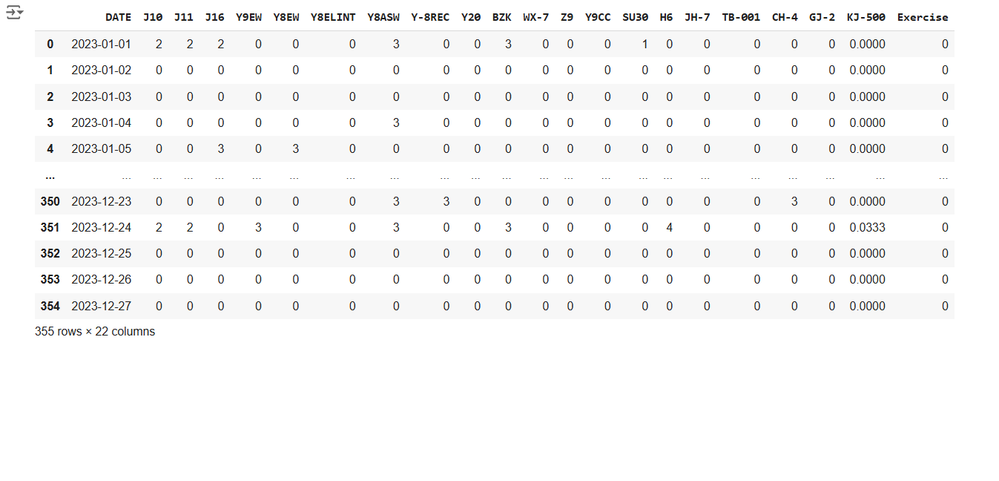
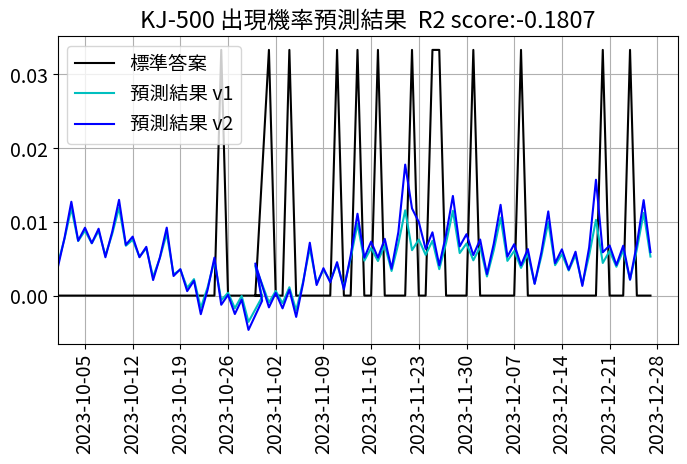

使用機器學習 預測軍事動態-西南空域篇

認識 Prophet
Prophet 是一個由 Facebook Core Data Science Team 發表的開源代碼庫，用於時間序列預測，基於 Python 和 R 語言。相較於自行訓練時間序列預測模型，Prophet 的一些優點如下：
改善模型選擇和調參的時間成本：時間序列有許多經典算法如 AR, VAR, ARMA, ARIMA, 指數平滑法等，選擇模型和調參的過程可被自動化。 提供讓分析師、領域專家能根據經驗法則設定的參數：例如歷史週期、特殊節日的日期等，不會因為寫成制式套件就失去自己手刻的好處。
安裝步驟 (0) 首先建議要用 conda 創建虛擬環境，避免不同套件版本產生不必要的衝突
(base) $ conda create -n env_name python=3.7
(base) $ conda activate env_name
(env_name) $
Windows 而 Windows 的預設編譯器是 MSVC ，pystan 並不支援，因此需要額外安裝 Windows 版本的 gcc：mingw-w64 compiler
(env_name) $ conda install libpython m2w64-toolchain -c msys2
確認都有安裝好支援的 c++ compiler 後，記得先安裝 pystan 。以下都建議使用 conda install，不要用 pip install，虛擬環境下的 jupyter notebook 可能會 import 不到。
(env_name) $ conda install -c pystan conda-forge
接著安裝 prophet （注意：v1.0 後的版本套件名稱為 prophet，不再是 fbprophet，網路上很多教學文章還以舊稱，記得在 import 時調整即可
(env_name) $ conda install -c prophet conda-forge
###完成好以後就可以載入資料集進行分析
像部隊活動這種多半具有週期性，我們可以結合上述的資料集每天的活動數量與戰備警巡的日期進行進一步的分析，戰備警巡為中共東部戰區位臺灣周邊海空域進行之例行性海空兵力聯合巡邏活動，在戰備警巡實施期間，我們可以由發布的新聞稿中觀察到中共軍機和船艦的活動大幅增加，機型種類也更加完整，中共發言人在例行記者會解釋： 「戰備警巡主要目的在進一步提升部隊實戰化訓練水平，增強捍衛國家主權和領土完整的打仗能力，共軍將持續練兵備戰，繼續常態組織有關軍事行動」
，而戰備警巡發生的時間往往都在晚上或是清晨，雖然只在我24浬處進行，但軍事行動已具備「猝然攻擊」的戰術戰法，使我國軍最前線海空人員疲於奔命，藉由統計戰備警巡新聞報導的資料，可以大致推估戰備警巡週期大月在6-14天不等，但這僅是藉由統計資料直觀判斷的結果，如果加上深度學習工具，我們更能做到「預測」，「Prophet」程式庫，進行時間序列預測
# 將 day.csv 匯入資料框
# 由 parse_dates 指定代表日期的行
df = pd.read_csv('day.csv', parse_dates=[1])
df2 = pd.read_csv('/content/dateAndcharacter.csv',parse_dates=[1])
DF_PLANE = pd.DataFrame(df2)
DF_PLANE['DATE'] = pd.to_datetime(DF_PLANE['DATE'], format='%Y%m%d')
DF_PLANE

以上的資料集為2023年國防部軍事動態網站上擷取出來的公開資料 我把它彙整成csv檔案 連結在這裡 2023年國防部軍事動態網站軍事動態彙整
接下來就開始 開工寫程式
載入資料集
df2 = df.copy()
DF_PLANE2=DF_PLANE.copy()
DF_PLANE2=DF_PLANE2[['DATE', 'KJ-500']]
#把想要評估的對象設定為y 這邊以KJ-500
DF_PLANE2.columns = ['ds', 'y']
# 設定分割日 mday
mday = pd.to_datetime('2023-10-1')
# 建立訓練用 index 與驗證用 index
train_index = DF_PLANE2['ds'] < mday
test_index = DF_PLANE2['ds'] >= mday
# 分割輸入資料
x_train = DF_PLANE2[train_index]
x_test = DF_PLANE2[test_index]
# 分割日期資料（用於繪製圖形）
dates_test = DF_PLANE2['ds'][test_index]
選擇prophet演算法
from prophet import Prophet
# 選擇模型
# 這 3 個 seasonality 參數的設定很重要
# 本資料為日單位，因此不需使用 daily_seasonality
# weekly_seasonality 與 daily_seasonality 除了 True/False 以外，
# 也可以指定成數值（三角函數的數量）
# seasonality_mode: additive(預設) multiplicative
m1 = Prophet(yearly_seasonality=True, weekly_seasonality=True,
daily_seasonality=True,interval_width=0.9,
seasonality_mode='multiplicative')
訓練與預測
m1.fit(x_train)
future1 = m1.make_future_dataframe(periods=61, freq='D')
確認結果
display(future1.head())
display(future1.tail())
fcst1 = m1.predict(future1)
fig = m1.plot_components(fcst1)
plt.show()
繪製圖形
計算與實際的差異值(R2)
# 只從 fcst2 中提取預測部分
ypred2 = fcst2[-88:][['yhat']].values
# 計算 R2 值
score2 = r2_score(ytest1, ypred2)
#### 確認結果
r2_text2 = f'R2 score:{score2:.4f}'
print(r2_text2)
繪製時間序列圖
import matplotlib.dates as mdates
fig, ax = plt.subplots(figsize=(8, 4))
#### 繪製圖形
ax.plot(dates_test, ytest1, label='標準答案', c='k')
ax.plot(dates_test, ypred1, label='預測結果 v1', c='c')
ax.plot(dates_test, ypred2, label='預測結果 v2', c='b')
# 日期刻度間隔
# 於每週四顯示日期
weeks = mdates.WeekdayLocator(byweekday=mdates.TH)
ax.xaxis.set_major_locator(weeks)
#### 將日期刻度標籤文字旋轉 90 度
ax.tick_params(axis='x', rotation=90)
#### 開始日與結束日
sday = pd.to_datetime('2023-10-1')
eday = pd.to_datetime('2023-12-31')
ax.set_xlim(sday, eday)
#### 顯示網格等
ax.grid()
ax.legend()
ax.set_title('KJ-500 出現機率預測結果 ' + r2_text2)
輸出畫面

結論
經由這套工具分析戰備警巡與時間週期的關係我們可以得到以下結論。 (一)戰備警巡執行週期約在6-14天，發生時間以周三到周五頻率為最高，週六為發生頻率較低的時間： 這也與我們觀察的數據一致，藉由系統得出的執行週期，可推測未來20天哪幾天共軍執行戰備警巡的機率較高